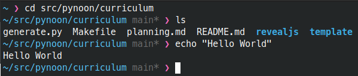
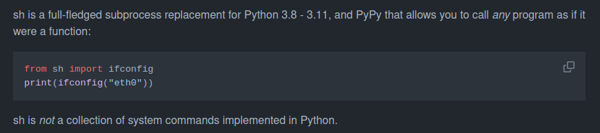
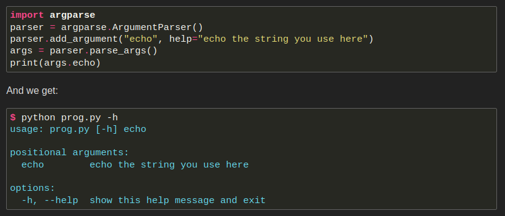
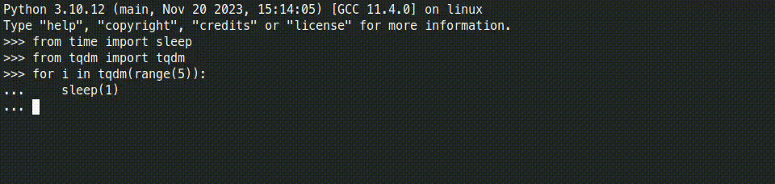
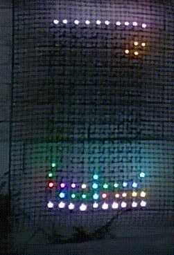
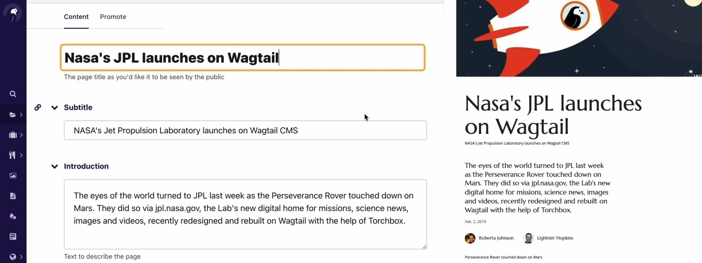
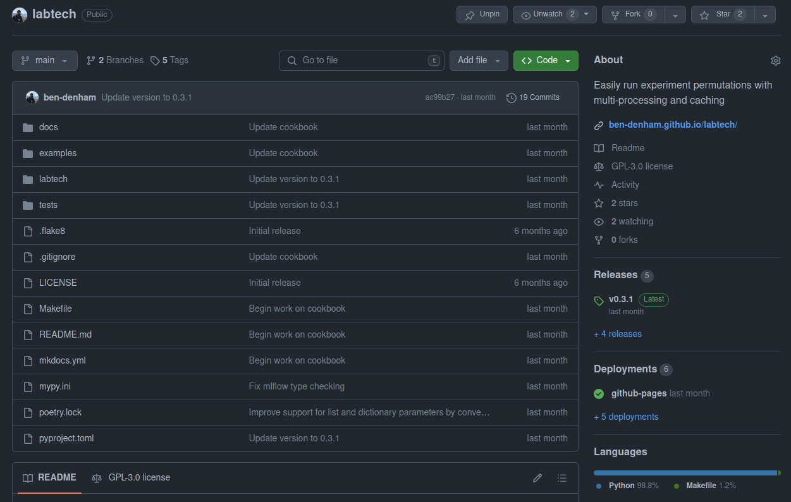

PyNoon Plus Lesson 4
Warm-Up Exercise
- Think of questions or topics you’d like to bring up during our wrap-up discussion
- Continue work on your Personal Python Project
Thanks
- To the host for the great venue!
- To our sponsors
Administrivia
- Fire escapes
- Toilets
- Cleaning up after ourselves
- WiFi
PyNoon Finale: What Next?
- 10,000 foot view of topics not covered so far
- Recommendations for continuing learning
- Wrap-up discussion - start thinking of questions
Object Oriented Programming (OOP)
- Define data types (classes) that are used to create objects that store their own variables (attributes) and functions (methods)
- Dataclasses are particularly great for storing a bunch of related variables:
from dataclasses import dataclass
@dataclass
class InventoryItem:
"""Class for keeping track of an item in inventory."""
name: str
unit_price: float
quantity_on_hand: int = 0
def total_cost(self) -> float:
return self.unit_price * self.quantity_on_hand
my_item = InventoryItem(name='Notebook', unit_price=9.99, quantity_on_hand=5)
print(f'We have {my_item.total_cost()} worth of {my_item.name}')Python Scripting
The command line
- Every operating system has a command-line/command-prompt/terminal
- It lets you run programs with text commands
- Similar to the Python shell

Running other programs
- Run commands from Python with:
subprocesssh(pip-installable)

Command line interfaces (CLIs)
argparse
lets you specify arguments for a command-line interface:

Also see:
- Find and work on files and folders with
pathlib - Regular expressions (regexes) for matching/extracting strings
- TOML for configuration files
- Simple flat-file SQL database: sqlite3
- Run multiple tasks at the same time
- Progress bars with
tqdm:

Internet-of-Things
- Python libraries for connecting to IoT devices
- E.g.
xledfor Twinkly lights
- E.g.


Internet-of-Things
- Raspberry Pi is a cheap and popular computer for IoT use cases
- MicroPython for microcontrollers
- Related: Send messages or build a bot for chat apps like Slack:
Python Web Development
Flask - the simplest option
Database-backed web applications
- FastAPI - modern option for APIs
- Django - saves you from
re-inventing wheels
- Wagtail - Content Management System for Django

Project Best Practices
Project structure
- Split code into modules (
.pyfiles) of functions - Include a
READMEandLICENSE - Example: github.com/ben-denham/labtech

Documentation
- Give variables, functions, and files informative names!
- Write docstrings for your modules, functions, and variables
- Follow a style guide for documenting arguments and return values
- Use type hints to document and check the data types of function arguments and return values
- MkDocs can generate documentation from Markdown files, docstrings, and type hints
Tooling
Miscellaneous
The Python Community
- Python New Zealand
- Community Python module and tool development on GitHub and GitLab
Continuing Your Learning
- Work on a project you care about!
- Online courses, e.g. Python for Everybody
- Real Python Tutorials
- Full Stack Python
- Automate the Boring Stuff with Python
- The official Python documentation
Wrap-Up Discussion
- Would you be interested in a follow-up course?
- Would you want to repeat this course?
- Would you be interested in an on-going meetup?